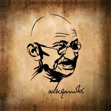
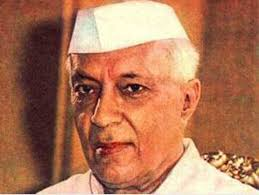
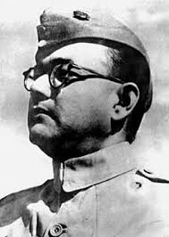
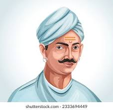

1.Mahatma Gandhi

Mohandas Karamchand Gandhi, popularly called Mahatma Gandhi, was born on October 2, 1869. Because of his enormous sacrifices for India, he is sometimes referred to as the Father of the Nation. Along with guiding India toward freedom, he also served as an inspiration for several other nations’ independence efforts and human rights movements. Under his direction, the historical Non-Cooperation movement, the Dandi March, and the Quit India movement were all launched and he was killed on January 30, 1948, in New Delhi. He is one of India’s most prominent freedom fighters.

Born on November 14, 1889, Pandit Jawaharlal Nehru was Motilal Nehru and Swarup Rani Nehru’s child. Nehru was a well-known attorney and thinker, and he quickly rose to become one of the best politicians the country had ever seen. Nehru rose to be one of the most potent leaders in Indian politics after Gandhi’s endorsement in the 1930s. After much thought, Nehru accepted the India partition in 1947 and took oath as India’s first Prime Minister after independence. His birthday, November 14, is widely observed as Children’s Day in India.

He was born on 31 October 1875 and died on 15 December 1950. Often renowned as the Iron Man of India & Bismarck of India, he was famous for his courage and heroism from a very young age. Sardar Patel, who was at first a lawyer, quit his job to battle for India’s freedom from British rule. He was elected India’s Deputy Prime Minister when the country gained independence..

He was born on 31 October 1875 and died on 15 December 1950. Often renowned as the Iron Man of India & Bismarck of India, he was famous for his courage and heroism from a very young age. Sardar Patel, who was at first a lawyer, quit his job to battle for India’s freedom from British rule. He was elected India’s Deputy Prime Minister when the country gained independence.

Lal Bahadur Shastri was born on October 2, 1904, in Mughalsarai, Uttar Pradesh, and passed away on January 11, 1966. He was awarded the title of “Shastri” Scholar when he completed his education at Kashi Vidyapeeth. He spent a significant amount of time in prison since he was a freedom fighter for independence. Before being chosen as India’s second Prime Minister in 1964, he served as Home Minister during the country’s independence. In 1965, he invented the catchphrase “Jai Jawan, Jai Kisan,” which is still used today.

With a desire for liberty and a revolutionary spirit permeating each inch of his body, Bismil was among the most notable Indian freedom fighters who opposed British colonialism and enabled the country to breathe the fresh air of freedom after centuries of the fight against the imperial forces. He was hanged to death at the Gorakhpur Jail.

The freedom fighter, Subhas Chandra Bose, sometimes referred to as Netaji was born in the state of Orissa. He could have been compelled to flee England for India in 1921 due to the Jallianwala Bagh Massacre. He joined the (INC) Indian National Congress and took part in the movement for civil disobedience. Furthermore, he eventually formed the Azad Hind Government and Azad Hind Army.

Jhansi ki Rani (Rani Laxmi Bai), one of the top women liberation warriors whose contributions will never be forgotten or disregarded, is India’s top ten independence fighters. Rani Lakhsmi Bai, Queen of Jhansi, was born in 1828. She had a significant role in the 1857 Indian independence struggle.

Born in 1827, Mangal Pandey was a pioneer in the movement for freedom. He was one of the rebels who initially exhorted youthful Indian troops to join the insurrection in 1857. They launched the Indian uprising in 1857 by carrying out the first attack upon English authority while serving as soldiers for the Britishers (British East India Company)

The 1857 uprising was greatly aided by Nana Sahib, who led a group of ardent revolutionaries. He overtook the East India Company’s soldiers in Kanpur by slaying the force’s remnants, endangering the British camp. Nana Sahib was not just daring and fearless but also a gifted administrator who managed and organised hundreds of Indian troops. He is one of India’s finest freedom fighters.